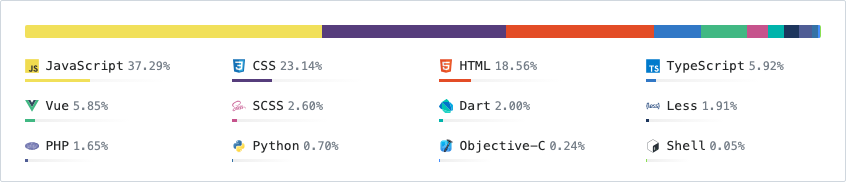

About me
Computer Science Master's student exploring how Large Language Models can make information retrieval and recommendation genuinely useful for people.
I'm Shaohuang Wang, a Computer Science Master's student at Xinjiang University, focusing on Machine Learning and Data Structures. My research interests include Large Language Models and Recommender Systems. I'm also a developer at NLPIR Lab, working on NLP and data-processing technologies.
My current work centers on LLM-driven recommendation, retrieval-augmented generation (RAG), supervised fine-tuning (SFT), and instruction-dataset construction — building systems that turn semi-structured domain data into high-quality, trustworthy answers.
Currently: researching LLM-driven scientific & technological information recommendation for my master's thesis at the NLPIR Lab.
Education
Xinjiang University, China
2022.09 – PresentM.Eng. in Computer Science · GPA 3.5/4.0
Core courses: Machine Learning, Computer Networks, Data Structures.
Thesis: “Research on scientific and technological information recommendation via LLM”.
Interests: LLM, RAG, SFT, Fine-tuning, Recommender Systems.
Shanghai University of Engineering Science, China
2016.09 – 2020.06B.Eng. in Vehicle Engineering · GPA 3.1/4.0
Awards: National Scholarship (Top 1%), First-Class Scholarship (Top 3%).
Research Experience
Domain Information Tracking and Processing Project
2022.09 – PresentDeveloper · NLPIR Lab
Built the algorithm tool layer: data collection, review and correction, dynamic selection, keyword extraction, and briefing generation. Used Elasticsearch and MySQL with a Docker-based deployment featuring front/back-end separation.
- Python
- Elasticsearch
- MySQL
- Docker
- Vue.JS
- FastAPI
Doc2QA Framework for LLM SFT Datasets
2023.04 – PresentDeveloper · NLPIR Lab
Released a QA instruction-tuning dataset from semi-structured data and built the “Doc2QA” LLM framework that generates QA pairs from HTML, DOC, and PDF sources.
- Python
- Llama-factory
- Vllm
- FastAPI
- Docker
- JavaScript
Skills
Proficient in Coding
Python, FastAPI, Elasticsearch, Docker, Vue.Js, Nginx
Model Training in AI/ML
PyTorch, TensorFlow, Llama-index, Vllm, Llama-factory
Simulation and Design
AutoCAD, CATIA, SolidWorks, ANSYS, 3DMax, Adobe Photoshop/Illustrator
Languages
Chinese (native), English (IELTS 6.5), Japanese (JLPT-N2)
